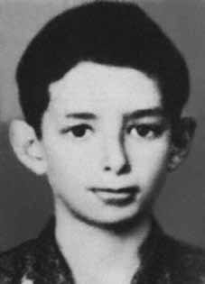

Luiz
René
Silveira
e Silva
CIRCUNSTÂNCIAS DA MORTE
De acordo com o Relatório Arroyo, entre os dias 14 a 19/1/1974, alguns guerrilheiros procuravam seus companheiros depois do episódio conhecido como o “Chafurdo de Natal”, e Luiz René (Duda) estava entre eles. Na ocasião, no dia 19 de Janeiro, Ângelo Arroyo (J.) procurava se aproximar desse local junto com a Comissão Militar, indo junto com Zezim, mas deixando Edinho e Duda juntos para procurar Piauí, marcando um encontro para o mês de março em um local próximo dali. Após isso não há mais referencias sobre o grupo e sobre Duda. Segundo o Relatório do Ministério da Marinha, de 1993, Luiz René foi morto em março de 1974, em um combate em Xambioá. iv Segundo a listagem do Serviço Nacional de Informações, conta que foi morto em 14/3/1974. v No Relatório da Caravana dos Familiares dos Mortos e Desaparecidos na Guerrilha do Araguaia, de Paulo César Fonteles de Lima, de 15/1/1981, a partir do depoimento de José da Luz Filho, afirma-se que Duda provavelmente se entregou em São Geraldo e que o Exército o manteve vivo por um tempo. vi Em depoimento do trabalhador rural Pedro Moraes da Silva, em 4/7/2001, para o Ministério Público Federal (MPF), ele afirma ter visto Duda, ao passar em frente da casa de Vanu (morador da região que serviu como guia aos militares) amarrado e seguido por mais ou menos 20 soldados fardados do Exército. Afirmou que seus pulsos estavam sem pele por causa das cordas que o amarravam. Posteriormente, que reconheceu a ossada de Duda por conta de uma camisa esticada em cima de uma árvore e pelos ossos da perna que eram compridos e, ainda, ao pegar o crânio da vítima viu um buraco de bala na testa. No mesmo termo de depoimento, afirma-se que o corpo de Luiz René teria sido jogado num castanhal na região do Gameleira, onde hoje se localiza a fazenda Brasil-Espanha. No depoimento do lavrador Agenor Moraes Silva, de 7/7/2001, o declarante afirmou que viu Duda e Rosinha vivos e presos pelo Exército e que este, após ser pego na região do Chega com Jeito, no final de 1973, foi visto algemado, em uma sala na base da Bacaba. Depois disso, o guerrilheiro foi levado para a mata onde teria um encontro com Cristina. O depoente afirma, também, que os militares obtiveram, “judiando” de Duda, a informação de que este e Cristina se encontravam a cada 15 dias, junto com outros guerrilheiros. O MPF também colheu depoimento de Raimundo Nonato dos Santos, vulgo Peixinho, em 14/7/2001. Na ocasião, ele afirmou que: uma vez encontraram os guerrilheiros Edinho e Duda; houve confronto e Edinho levou três tiros do capitão Salsa, também conhecido como Aníbal, e do soldado Ataíde. Não houve confronto, pois Edinho e Duda não atiraram nos soldados. […] depois da prisão nunca mais viu Duda ou Edinho, que apesar de baleado estava vivo e foi posto numa padiola e levado num helicóptero. O confronto foi na cabeceira da Borracheira, na direção da [grota] Fortaleza. O Duda estava desarmado, mas o Edinho carregava uma espingarda feita pelos próprios guerrilheiros, que tinha o apelido de Zezina. vii O MPF lembra ainda, no relatório parcial da investigação sobre a Guerrilha do Araguaia, que “Manuel Leal Lima (ex-guia conhecido como Vanu), relatou que ao final da guerrilha Duda foi morto na Bacaba, assim como Piauí e Pedro Carretel. Vanu disse ter acompanhado a equipe que os executou.” Em artigo publicado no jornal O Globo, de 2/5/1996, o jornalista Amaury Ribeiro Jr. Colheu depoimentos que apontam para a execução de Luiz René junto com Antônio de Pádua e Maria Célia Corrêa. Segundo a reportagem, os presos, com olhos vendados, desceram de um helicóptero, que voara da base da Bacaba, e foram fuzilados quando cumpriam a ordem de caminhar cinco passos em direção a um igarapé do rio Gameleira.
According to the Arroyo Report, between January 14th and 19th, 1974, some guerrillas were looking for their companions after the episode known as the “Christmas Wallowing”, and Luiz René (Duda) was among them. At the time, on January 19th, Ângelo Arroyo (J.) sought to approach this location together with the Military Commission, going together with Zezim, but leaving Edinho and Duda together to search for Piauí, arranging a meeting for the month of March at a location nearby. After that there are no more references about the group and Duda. According to the 1993 Ministry of the Navy Report, Luiz René was killed in March 1974, in combat in Xambioá. iv According to the National Information Service list, he says he was killed on 3/14/1974. v In the Report of the Caravan of the Relatives of the Dead and Missing in the Araguaia Guerrilla, by Paulo César Fonteles de Lima, dated 1/15/1981, based on the testimony of José da Luz Filho, it is stated that Duda probably gave himself up in São Geraldo and that the Army kept him alive for a while. vi In a statement by rural worker Pedro Moraes da Silva, on 7/4/2001, to the Federal Public Ministry (MPF), he claims to have seen Duda, as he passed in front of Vanu's house (a resident of the region who served as a guide to the military), tied up and followed by more or less 20 uniformed Army soldiers. He stated that his wrists were without skin because of the ropes that tied him. Later, he recognized Duda's bones due to a shirt stretched out on top of a tree and the leg bones that were long and, when he picked up the victim's skull, he saw a bullet hole in the forehead. In the same statement, it is stated that Luiz René's body had been thrown into a chestnut tree in the Gameleira region, where the Brazil-Spain farm is located today. In the testimony of farmer Agenor Moraes Silva, dated 7/7/2001, the declarant stated that he saw Duda and Rosinha alive and arrested by the Army and that the latter, after being caught in the Chega com Jeito region, at the end of 1973, was seen handcuffed, in a room at the Bacaba base. After that, the guerrilla was taken to the forest where he would have a meeting with Cristina. The deponent also states that the military obtained, “judging” from Duda, the information that he and Cristina met every 15 days, together with other guerrillas. The MPF also took a statement from Raimundo Nonato dos Santos, known as Peixinho, on 7/14/2001. At the time, he stated that: they once met the guerrillas Edinho and Duda; There was a confrontation and Edinho was shot three times by Captain Salsa, also known as Aníbal, and soldier Ataíde. There was no confrontation, as Edinho and Duda did not shoot at the soldiers. […] after the arrest he never saw Duda or Edinho again, who despite being shot was alive and was placed on a stretcher and taken in a helicopter. The confrontation took place at the head of Borracheira, in the direction of [grota] Fortaleza. Duda was unarmed, but Edinho carried a rifle made by the guerrillas themselves, which had the nickname Zezina. vii The MPF also recalls, in the partial report of the investigation into the Araguaia Guerrilla, that "Manuel Leal Lima (former guide known as Vanu), reported that at the end of the guerrilla Duda was killed in Bacaba, as well as Piauí and Pedro Carretel. Vanu said he accompanied the team that executed them." In an article published in the newspaper O Globo, on 5/2/1996, journalist Amaury Ribeiro Jr. collected statements that point to the execution of Luiz René together with Antônio de Pádua and Maria Célia Corrêa. According to the report, the prisoners, blindfolded, got out of a helicopter, which had flown from the Bacaba base, and were shot when they complied with the order to walk five steps towards a stream on the Gameleira River.
Según el Informe Arroyo, entre el 14 y el 19 de enero de 1974, algunos guerrilleros buscaban a sus compañeros luego del episodio conocido como el “Revuelco de Navidad”, y entre ellos se encontraba Luiz René (Duda). En ese momento, el 19 de enero, Ângelo Arroyo (J.) intentó acercarse a ese lugar junto con la Comisión Militar, yendo junto con Zezim, pero dejando a Edinho y Duda juntos para buscar Piauí, concertando una reunión para el mes de marzo en un lugar cercano. Después de eso no hay más referencias sobre el grupo y Duda. Según el Informe del Ministerio de Marina de 1993, Luiz René fue asesinado en marzo de 1974, en combate en Xambioá. iv Según la lista del Servicio Nacional de Información, dice que fue asesinado el 14/03/1974. v En el Informe de la Caravana de Familiares de Muertos y Desaparecidos en la Guerrilla de Araguaia, de Paulo César Fonteles de Lima, de fecha 15/01/1981, basado en el testimonio de José da Luz Filho, se afirma que Duda probablemente se entregó en São Geraldo y que el Ejército lo mantuvo con vida por un tiempo. vi En declaración del trabajador rural Pedro Moraes da Silva, del 4 de julio de 2001, al Ministerio Público Federal (MPF), afirma haber visto a Duda, al pasar frente a la casa de Vanu (un habitante de la región que servía de guía a los militares), atado y seguido por más o menos 20 uniformados del Ejército. Manifestó que sus muñecas estaban sin piel a causa de las cuerdas que lo ataban. Posteriormente reconoció los huesos de Duda por una camiseta tendida sobre un árbol y los huesos de las piernas que eran largos y, cuando recogió el cráneo de la víctima, vio un agujero de bala en la frente. En el mismo comunicado, se afirma que el cuerpo de Luiz René había sido arrojado contra un castaño en la región de Gameleira, donde hoy se ubica la finca Brasil-España. En el testimonio del campesino Agenor Moraes Silva, de 7/7/2001, el declarante afirmó que vio a Duda y Rosinha vivos y detenidos por el Ejército y que esta última, después de ser capturada en la región de Chega com Jeito, a finales de 1973, fue vista esposada, en una habitación de la base de Bacaba. Luego de eso, el guerrillero fue llevado al bosque donde tendría un encuentro con Cristina. El declarante también afirma que los militares obtuvieron, “a juzgar” de Duda, la información de que él y Cristina se reunían cada 15 días, junto con otros guerrilleros. El MPF también tomó declaración a Raimundo Nonato dos Santos, conocido como Peixinho, el 14/07/2001. En su momento, afirmó que: una vez se encontraron con los guerrilleros Edinho y Duda; Hubo un enfrentamiento y Edinho recibió tres disparos del capitán Salsa, también conocido como Aníbal, y del soldado Ataíde. No hubo enfrentamiento, ya que Edinho y Duda no dispararon contra los soldados. […] después de la detención nunca volvió a ver a Duda ni a Edinho, quien a pesar de recibir un disparo estaba vivo y fue colocado en una camilla y trasladado en un helicóptero. El enfrentamiento se produjo en la cabecera de Borracheira, en dirección a [grota] Fortaleza. Duda estaba desarmado, pero Edinho portaba un rifle fabricado por los propios guerrilleros, que tenía el sobrenombre de Zezina. vii El MPF también recuerda, en el informe parcial de la investigación sobre la Guerrilla de Araguaia, que "Manuel Leal Lima (ex guía conocido como Vanu), informó que al final de la guerrilla Duda fue asesinado en Bacaba, así como Piauí y Pedro Carretel. Vanu dijo que acompañaba al equipo que los ejecutó". En un artículo publicado en el diario O Globo, el 2 de mayo de 1996, el periodista Amaury Ribeiro Jr. recogió declaraciones que apuntan a la ejecución de Luiz René junto con Antônio de Pádua y Maria Célia Corrêa. Según el informe, los detenidos, con los ojos vendados, descendieron de un helicóptero que volaba desde la base de Bacaba y fueron fusilados cuando cumplían la orden de caminar cinco pasos hacia un arroyo en el río Gameleira.